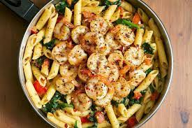

Tomato Pasta

Description
This tomato spinach shrimp pasta recipe is healthy, light, and delicious comfort food. Perfect for easy healthy dinners or date night.
Ingriedients
- 2 tablespoons olive oil
- 8 oz (220g) medium shrimp, peeled and deveined
- 1/4 teaspoon red pepper flakes
- 1 teaspoon smoked paprika or more, to taste
- Kosher salt and freshly ground black pepper, to taste
- 1 teaspoon Italian seasoning
- 4 Roma tomatoes, chopped
- 1/4 cup fresh basil leaves, chopped
- 6 oz fresh spinach
- 3 cloves garlic, minced
- 8 oz (220g) pasta (penne or spaghetti)
- 2 tablespoons high-quality olive oil, optional
Steps
- Add 2 tablespoons of olive oil to a large skillet, on medium-low heat.
- Add shrimp, red pepper flakes, paprika, Italian seasoning and salt in the skillet and cook on medium heat until shrimp is cooked through – about 5 minutes. Remove grilled shrimp from the skillet and set aside.
- In the same skillet, add chopped tomatoes, chopped fresh basil leaves, fresh spinach, and chopped garlic. Cook on medium heat about 3- 5 minutes until spinach wilts just a little and tomatoes release some of their juice. Remove from heat and adjust seasoning, if needed. Cover with a lid and keep off heat.
- Cook pasta according to package instructions, until al dente. Drain pasta and add to the skillet with the tomatoes and spinach.
- Reheat on low heat, mix everything well, adjust seasoning with salt and pepper. Remove from heat.
- Once pasta and veggies are off heat, add grilled shrimp back and drizzle with good quality olive oil just before serving, for an extra taste. Serve the shrimp pasta immediately, enjoy!